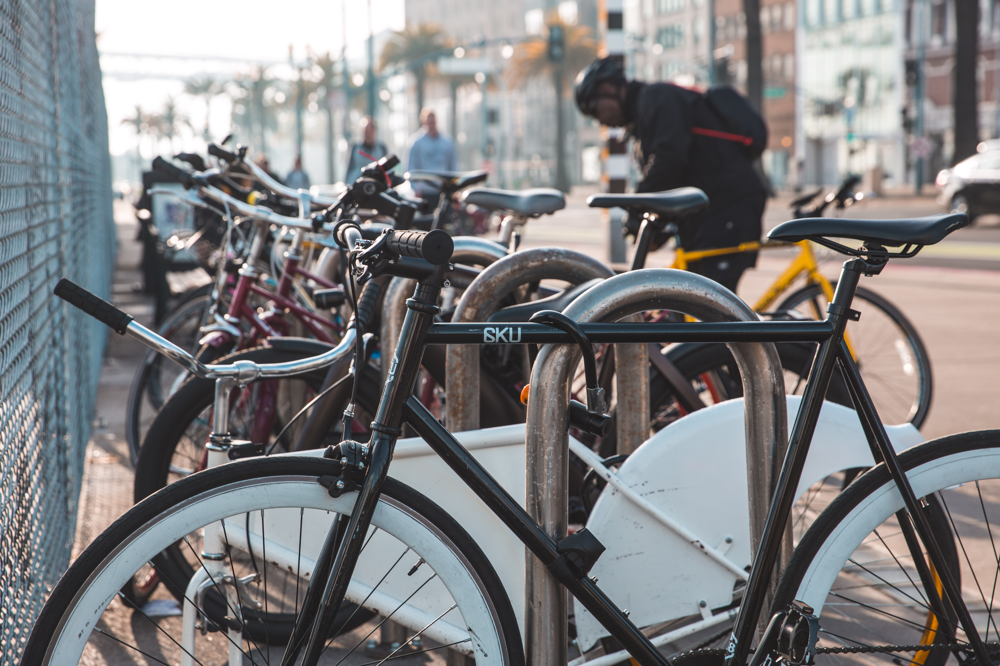

Current Weather
×
Bike Trails
Whether dirt or gravel roads, there are many trails throughout Fresno County and below is a list of Fresno's most popular biking trails.
Biking Organizations:
Fresno Cycling Club
,
Fresno County Bicycle Coalition
,
Clovis Cycling Meetup Group
Clovis Old Town Trail
Clovis, CA
Length: 5.8 miles
See More
Save to Watchlist
Millerton (Out and Back)
Clovis, CA
Length: 22.8miles
See More
Save to Watchlist
Rolling Hills to Friant
Madera, CA - Friant, CA
Length: 27.5miles
See More
Save to Watchlist
Millerton Loop
Friant, CA
Length: 17.5miles
See More
Save to Watchlist
Friant to Millerton Lake
Friant, CA - Millerton Lake
Length: 27.4miles
See More
Save to Watchlist

Auberry Road (Out and Back)
Clovis, CA
Length: 27.3miles
See More
Save to Watchlist
Belmont Time Trial
Belmont, CA
Length: 5 miles
See More
Save to Watchlist
Shaver Lake to Huntington
Shaver Lake, CA
Length: 17.8 miles
See More
Save to Watchlist
Auberry - Pine Flat Loop
Gordon, CA
Length: 88.90 miles
See More
Save to Watchlist